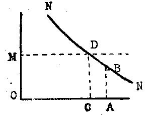

Librairie de Médicis — 1948 (deuxième édition)
par Richard von Strigl
traduit par P. Ochwald
Jusqu'à présent, quand nous avons parlé des prix, nous avons considéré uniquement la façon dont les prix s'établissent sur un marché libre, donc la création de ce qu'on appelle le prix de concurrence. Si nous voulons considérer désormais d'autres manières de créer des prix, c'est la création du prix de monopole qui va retenir notre attention. Nous traiterons ainsi, après l'étude du prix de concurrence, la création d'un prix qui peut en être considéré comme son pendant, et à propos duquel on peut mieux observer une détermination à sens unique de la fixation du prix dans l'économie.
Avant, nous devrons définir la situation du marché dans laquelle peut se créer un prix de monopole. Nous parlerons d'un monopole lorsque, soit l'offre, soit la demande d'une marchandise est réunie dans une seule main sur un marché. Ou bien il n'y a qu'un seul possesseur de cette marchandise qui entre en ligne de compte comme offrant, ou bien un seul intéressé qui veuille acheter, — ou bien les offrants et les demandeurs ne feront qu'un (le cas échéant, ils y auront été forcés), pour instaurer en commun une politique de monopole des prix. Dans ce qui suivra, seuls nous intéresseront les cas de monopole de l'offre. Nous dirons seulement que le monopole de la demande se rencontre bien plus rarement, et cela pour la cause très compréhensible que, presque pour chaque marchandise, la demande comporte une richesse de composition et des formes très variées, de sorte que l'organisation d'une position-monopole de demandeurs ne sera que rarement possible (en général, seulement dans les cas où il existe une demande étroitement limitée pour un moyen de production, par exemple pour la demande en betteraves à sucre faite par de rares fabriques). Il reste enfin entendu, dans ce qui suivra, que le "monopoleur" poursuit envers et contre tout son avantage, et qu'il n'est freiné en rien dans sa liberté de mouvements. Il n'est pas rare que des monopoles évitent d'exploiter complètement les avantages de leur position, pour ne pas froisser l'opinion, et pour éviter une intervention des pouvoirs publics.
Nous voyons dès l'abord et très bien que, lors de la fixation des prix, le monopoleur est "libre" dans un autre sens que le vendeur sur un marché de concurrence libre.
Il peut exiger tout prix qui lui convient, puisque personne n'est en situation de le concurrencer par une offre inférieure. Et c'est précisément cela qui, sur un marché libre, limite la liberté de mouvement du vendeur ; c'est le fait que — même s'il est "libre" d'agir comme il le veut lors de la fixation des prix, — il risque constamment d'être concurrencé par une offre plus basse, de telle sorte qu'il ne peut vendre qu'à un cours où une offre plus basse n'est plus possible à d'autres vendeurs. Nous avons vu comment cette situation se produit pour les vendeurs par le jeu des prix concurrents. Par contre, le monopoleur peut exiger un prix qui lui apporte le plus fort bénéfice, — c'est le propre de la situation du monopole, — une offre inférieure n'étant pas possible. Le prix du monopole se fixera d'abord suivant la forme que prend la demande : plus haut sera le prix fixé par le monopoleur, et plus faible sera la capacité d'achat de la demande. Le bénéfice total est égal au produit des quantités vendues multiplié par le montant du prix. Sa plus grande valeur est représenté graphiquement par le plus grand rectangle qui puisse être inscrit dans la courbe de la demande. D'autre part, la plus forte rentrée ne sera égale au plus fort bénéfice, pour le monopoleur, que si celui-ci n'a en général aucun frais de production (ou, en pratique, des frais insignifiants), ou bien si ses coûts sont indépendants (pratiquement indépendants) de la quantité du produit offert à la vente. Un exemple, parmi les rares exemples importants de ces situations, serait ici la position d'un monopoleur qui vend de l'eau minérale, pour laquelle il n'y a pas de concurrence, et qui n'aurait pas de frais pour recueillir cette eau ; le monopoleur n'aurait par conséquent qu'une seule question à résoudre : combien lui faudrait-il vendre de cette eau pour atteindre la plus forte rentrée d'argent, mais il voudra atteindre le plus grand bénéfice net (différence entre la rentrée totale et les frais correspondant à la quantité de ce qui est produit). De là découlent des questions spéciales, leurs réponses dépendant dans chaque cas de la façon dont les coûts sont composés. Pour le développement le plus général des principes de la "monopolisation" que nous traiterons, il suffit de considérer les cas où le bénéfice du monopoleur est indépendant du coût de la production.
Le fait que l'importance de la demande dépend du niveau des prix donne de prime abord au monopoleur la faculté de suivre d'abord deux voies dans la politique du monopole. Ou bien il peut fixer un prix, et satisfaire chaque demande qui sera encore prête à acheter à ce prix, ou bien il peut mettre en vente une certaine quantité de marchandises, et laisser à la demande qui se montrera sur le marché le soin de maintenir le prix. Les deux voies ont été souvent suivies dans la politique des cartels industriels. La politique monopolistique de la "quantité" se reconnaît surtout lorsque le cartel l'applique par un système assez compliqué de limitation de la production (non seulement limitation proportionnelle des exploitations, mais aussi attribution de "quotes-parts", souvent combinées avec des primes lorsqu'on reste au-dessous, et avec des amendes au cas où on les dépasse). Remarquons ici que, lorsque cette politique de monopole est suivie par un grand nombre d'entreprises particulières, une simple normalisation des prix ne suffit pas, en général, si une limitation de la quantité n'est pas décidée ensuite. Les entreprises qui font partie du cartel ont chacune en effet un intérêt à produire le plus possible, lorsque les prix sont hauts ; leurs stocks s'accumulent par suite d'une diminution du volume des ventes motivée par des prix trop élevés ; on voit alors apparaître le danger d'une dissolution du cartel, en cas d'échec, ou celui de l'introduction d'une limitation de la production ; ou encore la solution qui consiste à vendre à l'étranger, à des prix plus bas qu'à l'intérieur du pays, les produits en excès (discrimination des prix). Cette mesure, le "dumping", est souvent appliquée par les cartels.
Mais la situation de monopole ne permet pas seulement de créer un prix unitaire de monopole ; elle permet aussi de fixer différents prix, ce qui, en certaines circonstances, est utilisé pour augmenter encore le bénéfice du monopoleur. Sur un marché en concurrence libre, la tendance à fixer un prix unitaire se manifestera. Si un acheteur peut payer plus qu'un autre pour une certaine marchandise, il aura sur ce marché la possibilité de payer le même prix que d'autres intéressés, moins fortunés que lui : Il pourrait quitter le vendeur qui lui demande plus, et en trouver un autre, qui ne lui demande pas plus que le prix du marché. Il en est autrement, si un monopoleur domine l'offre comme seul vendeur. Il peut exploiter la "stratification" de la demande, le fait qu'à côté des acheteurs faibles, il y en a d'autres pouvant dépenser pour une certaine marchandise ; il fera donc à ceux-là des prix plus élevés qu'aux autres. Les procédés qu'on emploiera à cette occasion pourront être extrêmement variés. A côté de la différentiation des prix, il y aura des mesures indirectes, par introduction de rabais de toutes sortes. Souvent cette diversité de prix sera dissimulée sous une différence de "présentation" de la marchandise : Par exemple lorsque les tarifs pour le transport des voyageurs dans des classes supérieures du chemin de fer sont proportionnellement plus élevés que la différence des frais entraînés, ou si un monopole des tabacs fixe pour les meilleures qualités des prix plus élevés que la différence des frais de fabrication par rapport aux qualités inférieures. Souvent l'exploitation de cette stratification de la demande est étendue dans le temps : On publie, par exemple, une édition de luxe d'un ouvrage, destinée à ceux qui peuvent payer le maximum, ensuite une autre édition, pour de plus vastes couches de lecteurs, ensuite une autre édition, pour de plus vastes couches de lecteurs, et enfin, une édition populaire, qui cherchera à se vendre à des prix encore plus bas, dans les couches du public les moins fortunées, et qu'on n'a pas encore pu atteindre. Le cas n'est pas rare non plus qu'un monopole soit exposé à une concurrence dans une "région frontière", et doive alors faire des prix plus bas : par exemple les prix du fer seront moins élevés là où il entre en concurrence avec le béton (c'est le cas de la construction des ponts).
Notre raisonnement général a supposé une situation de monopole tout à fait rigide. Mais nos derniers exemples ont déjà montré un certain relâchement de cette notion. Par exemple, quand il s'agit d'un livre, on ne pourra généralement pas parler de monopole. A de rares exceptions près (pour certains ouvrages scientifiques), voici la situation qui se présentera le plus souvent : le vendeur (éditeur) du livre possédera sans doute un monopole pour ce livre en particulier, mais le public aura le choix entre d'autres livres, qui rempliront en général le même but, ou rendront aux lecteurs les mêmes services. Le cas d'un amateur recherchant juste certain roman, et aucun autre, sans s'occuper du prix à payer, ou d'autres cas semblables, reste rare. Donc le livre en question pourra, tout au moins dans une certaine mesure, être en concurrence avec d'autres. Il en sera de même dans bien d'autres circonstances, plus importantes pour la marche générale de l'économie. Nous en avons déjà cité un exemple : le fer et le béton sont des marchandises tout à fait différentes ; en général, on ne peut pas employer le béton à la place du fer, mais il y a tout de même une "région frontière", un "domaine", où le fer et le béton se font concurrence. De même pour la concurrence qui règne entre divers métaux. Le charbon fait concurrence à l'électricité, le gaz au pétrole, les briques au bois, la soie à la laine, etc. Enfin, les divers produits alimentaires se font aussi concurrence. Il est toutefois évident que cet état de concurrence, pour certains "domaines-frontières" plus ou moins étendus, ne peut supprimer le fait que l'une ou l'autre de ces marchandises possède toujours un certain monopole. Si, par exemple, le fer est vendu par une organisation monopolisée, la situation de monopole que nous supposions exister de façon rigoureuse se trouve, en fin de compte, confirmée. La "concurrence", par exemple celle du béton (mais aussi celle du bois comme matériau de construction dans d'autres domaines, peut-être celle d'autres métaux, etc.), la concurrence, dis-je, se bornera à se manifester lorsque, par suite d'une hausse des cours du fer, un certain nombre d'acheteurs se tourneront vers d'autres marchés, ceux des matières pouvant servir de remplacement. Elle aura donc pour effet que, si les prix haussent beaucoup, la demande diminuera plus que cela n'aurait été le cas si cette "concurrence" n'existait pas. La situation de monopole se maintient donc aussi dans ce cas. Si le monopoleur désire tirer le plus grand parti possible de sa situation, il devra compter avec la forme que prend la demande, conditionnée précisément par la concurrence des produits de remplacement. Malgré la possibilité de remplacer bien des marchandises par d'autres, il ne se trouvera pour ainsi dire aucun produit pour lequel, sans oublier cette possibilité, on ne puisse créer une situation de monopole dans le sens qu'une domination de l'offre entraînera une hausse des prix. Certes, il faudra tenir compte de ce que la demande, en cas de hausse des cours, décroîtra d'autant plus vite que la marchandise monopolisée pourra être plus aisément remplacée. Et cela aura pour résultat que le monopoleur verra disparaître la chance d'obtenir un bénéfice plus fort par hausse toujours plus forte des prix, car l'élévation des prix conduira très vite à une diminution sérieuse de la demande. Donc, plus une marchandise est facilement remplaçable, et moins le monopoleur pourra en élever le prix, cela tout au moins dans le cas où les produits concurrents ne sont pas, eux aussi, renchéris artificiellement par une politique monopolisante des prix.
La question d'une limitation de monopole est, dans un autre sens, encore plus importante. On voit souvent, dans la plupart des monopoles, se produira un fait, toujours le même : Au début, le monopoleur n'a pas à craindre de concurrence, mais elle peut surgir dès qu'un prix, tout à fait défini, est atteint. Cet état de choses se rencontre toujours lorsque, dans un pays, une certaine production industrielle s'unit pour former un monopole, et que la concurrence étrangère est tenue à l'écart par des tarifs douaniers protecteurs. Le monopole intérieur peut pratiquer sans aucun obstacle sa politique, tant que le prix où la concurrence extérieure pourrait s'introduire n'est pas atteint. Dès que ce prix est atteint, la situation de monopole à l'intérieur du pays est pour ainsi dire supprimée d'elle-même. Cette limite supérieure pour un prix de monopole est en général donnée par la formule "prix du marché mondial, plus frais de transport, plus douane protectrice", cela bien entendu s'il s'agit de monopoles "nationaux". D'autre part, la formation de monopoles locaux est aussi possible à l'intérieur de l'économie nationale ; ils se constituent tout seuls, par le fait que les produits concurrents, s'ils viennent d'assez loin, sont grevés de frais de transport (par exemple les briques). La formule est alors "prix de concurrence, plus frais de transport". Mais, en pratique, c'est le tarif douanier prohibitif qui forme la condition principale pour l'établissement d'un monopole.

Fig. 12. — Utilisation maxima d'un tarif protecteur.
Supposons (figure 12), que, pour une demande donnée, NN, on introduise un tarif douanier prohibitif, qui fixe le prix où la marchandise peut entrer de l'étranger dans le pays, à la hauteur OM. Si, dans le pays, le produit, en quantité OA, est fabriqué et arrive sur le marché, le prix ne pourra pas dépasser le niveau AB. Le tarif douanier ne se fait donc pas sentir sur le prix intérieur. Aussi longtemps que la constitution de la demande ne change pas, et que la quantité du produit fabriqué à l'intérieur ne diminue pas, le prix ne peut pas monter au-dessus de ce niveau, même si les tarifs douaniers et, par conséquent, les prix de la concurrence étrangère sont élevés sans limites. Mais un changement pour la production interviendra du jour où la production sera réunie en monopole qui met sur le marché une petite quantité de la marchandise produite. La production peut alors être diminuée d'abord jusqu'à la quantité OC ; à ce moment, on atteint le prix qui ne peut plus être élevé, puisque, sans cela, la production extérieure peut se faire sentir dans le pays. Une plus forte limitation de la production ne peut plus dès lors entraîner de nouvelles hausses de prix, puisque, pratiquement, à partir du prix OM, on peut se procurer toutes les quantités voulues sur le marché mondial. De ces considérations vont découler de suite quelques théorèmes généraux :
1. Des tarifs douaniers de protection ne peuvent pas conduire à une élévation des prix intérieurs, si l'offre intérieure est assez grande pour être absorbée par la demande existante, à un prix plus bas que le prix mondial, plus les frais de transport, plus la douane.
2. En ce cas, la hausse du prix intérieur ne peut avoir lieu, en appliquant les tarifs douaniers, que lorsqu'une limitation de la production a été réalisée par un monopole (ou aussi par d'autres mesures, par exemple une décision de l'État, qui, en ce cas, prendra souvent la forme d'une union de monopoles).
3. Dès lors, le prix peut être élevé jusqu'au niveau correspondant à la somme du prix mondial, plus transports, plus tarifs douaniers. Mais une hausse plus forte est exclue, pour l'état de fait donné, puisqu'un prix plus haut pourrait être concurrencé par l'extérieur.
Cela nous permet de répondre à quelques questions touchant les rapports entre monopole et tarifs douaniers protecteurs. Si, pour une raison quelconque, la politique économique veut assurer à la production nationale le prix OM (figure 12), et introduit dans cette intention un certain tarif protecteur, il est impossible d'atteindre ce prix, aussi longtemps que la production nationale jette sur le marché plus que la quantité OC. Si le tarif de protection doit mener à une élévation de prix, cela ne peut se faire (surtout en pratique), que par la voie d'une limitation de production par la réunion des producteurs nationaux en un monopole. Ceux qui souhaitent l'élévation des prix par tarifs douaniers devront donc reconnaître que cette hausse ne sera atteinte que par une limitation correspondante de la production. Dès lors, si quelqu'un désire maintenir l'élévation des prix intérieurs, par le jeu de tarifs douaniers, et s'oppose en même temps à ce que la production nationale soit réduite par la voie d'une union de producteurs, ces deux points de vue sont en contradiction. En outre, si le tarif a permis au monopole de hausser le prix jusqu'à OM, et si ensuite quelqu'un s'élève contre le monopole, la suppression du tarif douanier sera la manière la plus simple de détruire ce dernier. Il est évident que, dans ce cas, l'existence seule du tarif protecteur et l'exclusion de la concurrence étrangère qui en a résulté, permettent au monopole national d'élever les prix.
Nous n'avons donné ici que quelques indications générales sur les relations qui peuvent exister entre tarifs protecteurs et formation de monopoles. Nous n'avons encore rien dit de définitif sur l'effet des tarifs protecteurs en général. Nous n'en parlerons que plus tard, dans un autre chapitre.
On reconnaît généralement que la concurrence libre et le monopole sont deux cas-limites qui s'opposent dans des situations très différentes du marché, mais on a accordé beaucoup moins d'attention au fait que des conditions du marché de tout autre nature ont pris une importance très grande, surtout pour l'économie actuelle. Nous désignerons ces situations par une formule qui semble tout à fait contradictoire, mais qui est fort répandue, celle de "concurrence monopolistique" et nous nous en occuperons uniquement sous l'angle de l'offre, comme le monopole. L'expression choisie montre ici que la position de l'offre embrasse certains éléments de la libre concurrence, mais que d'autres circonstances interviennent et permettent que s'établisse une situation semblable à celle du monopoleur. Esquissons l'état de fait en question.
1. Il y a plusieurs vendeurs (offrants) pour une certain marchandise. Mais leur nombre est réduit, et quelques gros producteurs ont une influence déterminante sur l'importance de l'offre totale ("oligopole").
2. Les conditions du marché sont telles qu'un gros vendeur ne peut pas obtenir une augmentation sérieuse de sa vente par une diminution de prix n'allant pas trop loin.
Cette esquisse n'a certes pas une exactitude bien grande. En ce sens, il faudra encore compléter bien des données. Mais notre formule pourra de toute façon servir à comparer et à grouper les diverses circonstances qui apparaissent dans cette situation du marché. décrivons un peu plus en détail ce qui se passe.
Observons, chose qui, aujourd'hui, se voit très souvent, les conditions de l'offre d'un "article de marque". Admettons qu'il s'agisse d'un produit quelconque, appartenant par exemple à l'industrie de l'alimentation. Quelques gris producteurs amèneront sur le marché leurs produits, chacun portant sa marque déterminée. A côté d'eux, il y aurait encore un plus grand nombre de petits producteurs, hors d'état de vendre sous une marque qui puisse se soutenir. Ils vendent donc sans aucune marque, ou bien leur marque est si insignifiante qu'elle ne représente pratiquement rien pour le marché. Dès l'abord, il est clair que, sur ce marché, il existe une "concurrence". Les diverses marques se concurrencent les unes les autres, elles concurrencent aussi la marchandise sans marque. D'un autre côté, bien des choses nous rappelleront ce qui se passe en régime de monopole. Si l'un des producteurs de marque hausse légèrement son prix, ses acheteurs n'iront pas de suite chez ses concurrents, comme s'il s'agissait d'une concurrence libre, suivant les conditions admises. Très probablement, beaucoup de ses clients lui resteront fidèles, et cela tout simplement parce qu'ils sont accoutumés à cette marque, qu'ils ont parti pris contre les autres marques, pour une raison quelconque, etc. Inversement, si l'un des producteurs de marque diminue son prix, il ne pourra certainement pas attendre — et cela pour les mêmes raisons — que tous les clients de ses concurrents viennent chez lui. Et si nous nous tournons vers les petits producteurs, qui sont en dehors du domaine des grandes marques, nous voyons que leur vente reste relativement petite, malgré des prix inférieurs à ceux des producteurs de marque. Les acheteurs sont en effet habitués (en grande majorité) aux articles de marque, et — à tort ou à raison — ils ont un préjugé contre ceux qui sont vendus sans marque sur le marché : ils ne savent souvent pas si la qualité de l'article sans marque est la même que celle de la meilleure marque, ou bien ils estiment que la différence de qualité entre la marque et l'article sans marque est si forte, qu'ils restent fidèles à la marque, même si elle est sensiblement plus chère.
Nous assistons donc au phénomène suivant : une partie de l'offre se concentre en de vastes groupes, et l'attachement (disons l'habitude) des acheteurs à des groupements a pour conséquence que, malgré l'existence, en principe, d'une concurrence, les lois particulières au marché de la concurrence libre ne jouent pas ici. Quelles que soient les différences de prix, même pour des qualités tout à fait semblables (différences parfois beaucoup plus grandes que ne l'exigerait la différence réelle des qualités), on ne voit pas jouer cette loi de la recherche du chiffre d'affaires le plus fort, qui caractérise la concurrence libre, et qui fait que tout vendeur est prêt à abaisser son prix, s'il peut de cette manière arriver à augmenter son chiffre, tant que le nouveau prix couvre encore ses frais. De plus, les prix n'ont pas tendance à se rapprocher du prix de revient : on devra même s'attendre à ce que les grandes marques obtiennent des prix qui dépasseront peut-être beaucoup leur prix de revient, pendant que les petits producteurs, qui n'ont pas de marque, devront vendre à mauvais prix, couvrant à peine les frais. Ainsi c'est seulement "à la limite du marché", là où les articles sans marque sont vendus, que l'action la plus sérieuse de la concurrence libre se fait sentir. Ajoutons encore ceci : Les grands producteurs de marque auront des exploitations importantes, avec de fortes immobilisations de capitaux ; ils obtiendront le minimum de frais par objet produit, mais seulement pour une production assez grande. Il est donc fort possible, que, dans la situation du marché décrite ci-dessus, ces grandes exploitations ne travaillent que sur une échelle réduite, et qu'elles interrompent leur production lorsque leur courbe de coûts est dans la partie descendante. (Quantité produite OF pour le prix FN', dans la figure 11, ou un peu au-dessus.) Or, il est normal que dans a concurrence "monopolistique", l'extension de la production puisse se faire jusqu'à la quantité correspondant à ce prix sur la branche montante de la courbe, parce que, nous l'avons déjà dit, une augmentation de la vente n'est possible aux grands groupes de marque qu'en abaissant leurs prix (si toutefois cette possibilité existe en général). Graphiquement, ce phénomène se traduirait de la façon suivante : la courbe de la demande d'une marque couperait la courbe des frais totaux par objet produit au point N' de la figure 11, et cette courbe descendrait fortement de haut en bas. cette courbe des coûts totaux pourrait aussi être coupée encore plus à gauche par la courbe de la demande, de sorte que la quantité produite peut elle-même se trouver au-dessous de OE. Là se trouve la vraie cause de la différence qui existe ici par rapport à la concurrence libre. Dès lors, une exploitation peut travailler en couvrant complètement ses coûts (y compris les frais fixes) dans le domaine des frais décroissants, aussi longtemps qu'une extension de la production est possible en favorisant la vente, ou — ce qui peut-être ne sera pas très probable en pareil cas — jusqu'à ce que l'exploitation procède à une diminution de son équipement en capitaux pour diminuer ses frais fixes, puisqu'on n'attend plus d'augmentation de la production. (En régime de concurrence libre, aucune exploitation ne peut à la longue produire des quantités pour lesquelles elle travaille dans un régime de frais décroissants.)
Mais revenons à l'état de fait déjà décrit pour observer le domaine d'application des phénomènes que nous venons d'exposer. Nous avons délimité la situation permettant la concurrence des monopoles en supposant, d'un côté, la réunion de l'offre en de vastes groupes, et, de l'autre, l'attachement, la fidélité de la demande aux vendeurs de marque, pris individuellement. Le premier des deux facteurs exercera déjà une influence déterminante sur la façon dont l'offre se comportera. L'offrant, qui domine une grande partie de l'offre, ne sera pas obligé de courir après une augmentation en détail de son chiffre d'affaires, et de diminuer son prix pour ne vendre qu'une petite quantité en plus. L'attachement des demandeurs aux offrants, pris individuellement, est bien mis en évidence par l'exemple des articles de marque. Cet attachement se manifestera encore souvent, si on entretient des rapports économiques suivis ; l'acheteur ne fera pas cesser une relation bien établie pour profiter d'une bien petite réduction de prix, peut-être passagère, qu'on lui offre autre part. Tout ce que nous venons d'exposer sera d'une grande importance pratique si, dans l'organisation de la vente de grands producteurs, on observe une condition très importante, à savoir que, sur un marché dominé par une concurrence de monopoles, une augmentation de la vente n'est en général pas possible si on ne veut y consacrer de grandes dépenses supplémentaires, par exemple pour la publicité.
Les deux faits dont nous avons parlé, — la constitution de grands groupements au sein de la position vendeuse, et l'attachement de la demande à la personnalité de certains vendeurs, pour qui une extension de leur vente n'est possible qu'en augmentant les coûts — se rencontrent dans l'économie pratique actuelle, combinés entre eux de façon très variée. Pour toute personne connaissant de près ce qui se passe dans la vie économique, cette situation de fait, délimitée comme nous l'avons dit, pour la concurrence des monopoles, représente certainement aujourd'hui la situation la plus fréquente sur les marchés. Une grande quantité de marchandises, non seulement du domaine des produits d'usage et de consommation (à l'exception de certains aliments, des automobiles, machines à coudre, de divers articles d'habillement, et autres objets), mais encore des moyens de production sont offerts sur un marché où apparaissent nettement les phénomènes de la concurrence "monopolistique". Cela explique certains phénomènes qui se produisent quelquefois sur ces marchés, à la différence de ceux de concurrence libre. D'abord, différenciation des prix, et existence de prix très supérieurs aux prix de revient, mais aussi réduction de la production, là où les frais de fabrication par objet sorti diminuent. Enfin, autre phénomène extrêmement important dans la dynamique économique : Après des mouvements de dépression, les prix reculent souvent bien plus lentement sous l'influence d'une diminution de la demande que les prix de la concurrence libre, et restent même, sur ces marchés, absolument invariables. C'est, précisément, la connaissance imparfaite de ces caractéristiques du marché qui a largement contribué à rendre la science économique impuissante à expliquer ce qui se passe dans la vie économique.
Les cas de création des prix qui ont été étudiés jusqu'à présent — concurrence libre, monopole et concurrence monopolistique — sont tous caractérisés par le fait que nous admettons comme donnée une situation tout à fait définie du marché, et que le prix se fixe en fonction de cette situation et de l'attitude observée sur le marché économique par les intéressés. A ce groupe des formations des prix qui peuvent s'expliquer dans leur essence même par des considérations économiques, on peut maintenant opposer un autre cas de formation du prix. Beaucoup de prix ne naissent pas sur un marché, ou à la suite de ce qui se passe sur le marché, par une formation donnée d'offre et de demande ; la fixation des prix peut intervenir aussi en dehors du marché, avec effet obligatoire sur lui.
Une telle fixation de prix n'a d'intérêt pour nous que si sa mission est de "normaliser" un prix différent de celui qui se créerait sur le marché (libre). Cela étant, nous n'avons pas à examiner les règles dont le but serait non pas ce que nous venons de dire, mais d'imposer certaines régularisations, pour éviter des variations et autres phénomènes semblables, comme c'est le cas dans certaines grandes villes, pour les tarifs de transports publics, qu'on appelle "taxes d'ordre". Mais si les vraies "fixations de prix" ont pour but d'imposer des prix différents de ceux qui se formeraient sur le marché libre, des répercussions très étendues sur le marché en général sont inévitables. Ces répercussions très étendues seules peuvent être l'objet d'une observation "économique" (dans le sens littéral du mot), et non les circonstances qui fixent en pareil cas le niveau des prix. Voyons tout d'abord les cas où les normalisations de prix auront pratiquement une grande importance.
Le prix taxé s'obtiendra ou bien par un forcement du prix, ou bien par une réduction par rapport au cours qui se serait formé sur le marché libre. Très souvent, le forcement, le maintien à un niveau élevé se produira sous forme de la fixation d'un prix minimum obligatoire, et la réduction par l'établissement d'un prix maximum, qu'il est interdit de dépasser. Cela étant, c'est ce prix minimum ou maximum qui interviendra le prix effectivement pratiqué sur le marché. Une fixation de prix réduit est dans l'intérêt des acheteurs. Par conséquent, les prix maxima se trouveront surtout là où la politique économique aura tendance à protéger le consommateur dans une période de misère économique. La plus grande expérience dans ce domaine a été fournie par l'économie de guerre (et aussi, dans bien des pays, par celle d'après-guerre). Un autre domaine étendu pour les prix minima s'est révélé lors de la fixation des cours des changes de nombreux pays, où, pour une cause quelconque, on voulait empêcher que la dépréciation de la monnaie nationale n'apparaisse dans les cours des changes étrangers. D'autre part, une fixation des prix à un niveau élevé protège les intérêts des vendeurs (producteurs). On en trouve un exemple très important dans l'histoire, en étudiant les prescriptions des corporations du Moyen-Âge sur les prix minima qui devraient assurer à chaque producteur un prix "convenable", lui permettant de vivre normalement. De nos jours, on trouve aussi très souvent des cas de protections de prix dans l'intérêt des producteurs. La technique primitive et brutale de fixation de prix minima fait souvent place à d'autres méthodes qui prévoient ou bien une réduction de la production, ou bien une subvention (par exemple, en retirant du marché une certaine quantité de produits, pour les vendre à l'étranger à des prix plus bas), toutes mesures tendant à soutenir les cours, — et cela sans préjudice des mesures que les producteurs prennent souvent eux-mêmes en créant des monopoles. Un autre exemple, fort important, de maintien des prix à des niveaux élevés est fourni par l'élévation des salaires dans les contrats collectifs.
Nous ne pouvons traiter ici toutes les questions d'organisation relatives aux normalisations de prix. Le cas le plus simple sera certes celui où l'État édicte lui-même des prescriptions pour les prix, et met en branle son appareil de coercition pour en assurer l'exécution. On peut aussi confier la normalisation des prix à des organisations qui, dans le cadre de l'État, sont compétentes de droit, et peuvent user des pouvoirs de l'État pour exécuter leurs prescriptions. Il n'y a en fait aucune différence — et cela peut nous intéresser — entre ce genre d'organisation et celui où une coalition d'ouvriers, en lutte, ou qui discutent, ou aussi qui menacent de lutter, force les producteurs à signer un contrat collectif et met ensuite en branle son propre appareil de coercition pour empêcher que les salaires diminuent. Et même dans certaines circonstances, l'on peut voir de nouveau l'État prêter la main, dans une mesure plus ou moins grande, à l'exécution de cette normalisation des salaires. Pour commencer, la question de la validité des contrats collectifs, de leur reconnaissance par les tribunaux, et celle de l'effet juridique d'une "extorsion", sera d'une grande importance. Ensuite, il existe aussi des tarifs fixés par l'État, ou par des organes institués par l'État, ainsi que tout un édifice légal d'organisations ouvrières installées dans le cadre des organisations de droit public. Si nous voulions poursuivre les questions qui se posent quant aux effets possibles d'une normalisation des prix, cela nous mènerait trop loin, hors du cadre des faits à traiter. Des buts politiques et autres, fort variés, peuvent entrer en jeu, à côté de maintes luttes sociales. Dans nos problèmes rentrent seulement la question de l'effet produit par les normalisations de prix, qui se font en dehors du marché, et ont pour but d'imposer un prix autre que le prix marchand. Ces effets seront, pour une élévation "artificielle" des prix, à traiter un peu autrement que pour une réduction, bien que le schéma de base théorique — différence avec les "prix d'équilibre" — soit le même. Nous voulons d'abord examiner le cas des prix maintenus artificiellement bas (prix maxima). Nous avons à examiner trois faits :
1. L'abaissement des prix doit avoir pour conséquence que la demande en marchandise sera plus grande que l'offre.
2. La discordance entre offre et demande devra, d'un façon quelconque, être suivie d'une sélection parmi les demandeurs qui désirent opérer.
3. L'abaissement des prix (ou d'un groupe de prix) devra s'incorporer dans le système complet des prix de toute l'économie nationale, donc, d'abord, dans les relations existant entre coût de production et prix du produit. A ce propos, nous observerons que les effets provenant d'une réglementation d'un groupe de prix affecteront aussi d'autres marchés, en particulier pour des marchandises qui pourraient remplacer celles qu'on soumet à la réglementation des prix.
Nous avons déjà parlé précédemment (voir page 28) de la nécessité d'une sélection spécialement organisée parmi les acheteurs éventuels qui n'ont pas la possibilité de trouver ce qu'il leur faut par le "moyen économique" par excellence de la "lutte des prix". Ajoutons ici quelque chose à ce que nous avions dit. La création du principe de sélection doit être laissée aux parties qui se rencontrent sur le marché. Ensuite, on trouvera diverses formes de sélection déjà citées. Mais il peut aussi arriver qu'une organisation située en dehors du marché procède à cette sélection, en premier lieu l'État, ou un organisme appelé à cette fonction. A ce propos, on peut imaginer les formes les plus diverses de choix. Un principe très simple serait l'égalité entre les demandeurs. Chacun des intéressé devrait pouvoir acheter autant que les autres ; c'est ce qui se produit par exemple en temps de guerre pour les produits alimentaires. Un autre principe tiendrait compte du point de vue social. Par exemple, le père de famille ou le travailleur produisant beaucoup devraient recevoir plus que les autres, etc. Le choix d'un principe de sélection est beaucoup plus difficile, s'il ne s'agit plus de l'approvisionnement en matières alimentaires, mais de quelque chose qui joue un rôle dans le gagne-pain ; surtout des matières premières, vendues à bas prix. Ce serait, par exemple, le cas de produits bruts, venant de l'étranger, et qui, pour une raison quelconque, ne seraient introduits qu'en faibles quantités dans le pays, et dont on maintiendrait les prix à un niveau assez bas, en sorte que tous ceux qui voudraient acheter ne le pourraient pas. La situation sera semblable si un produit indigène est exploité en "économie forcée", et mis à la disposition des producteurs nationaux à un prix "trop bas", — donc au-dessous du prix où l'offre et la demande s'équilibreraient. On peut alors baser la répartition sur un "principe historique", chacun recevant autant qu'il a obtenu l'an dernier, ou un certain pourcentage de l'ancienne quantité, — ou bien le partage se fera suivant la grandeur actuelle de l'exploitation, etc. Inutile d'insister sur le fait que chaque principe historique conduira à une paralysie, à une raideur, qui n'est pas de nature à tenir compte des changements et des "glissements" divers qui doivent normalement se produire dans une structure économique, à mesure que le temps s'écoule. Mais toute tentative en vue de tenir compte de ces circonstances se heurte vite à d'énormes difficultés si on veut l'apprécier de façon "réaliste" : trop souvent l'arbitraire et le manque de compréhension se feront alors sentir durement.
Autre fait particulièrement important. Le résultat cherché, dans une sélection comme celle dont nous parlons, consistera, quel que soit son principe directeur, en ce que certains acheteurs obtiendront moins qu'aux prix établis, et même que certains ne recevront pas satisfaction (ou pas entièrement), bien qu'ils aient été prêts à acheter aussi à un prix plus haut. C'est le cas des acheteurs qui, selon leur situation de fortune, et après avoir calculé les prix qu'ils pourraient payer, voudraient donner plus que le prix fixé, mesure qui a pour effet de déclencher la tendance à remettre en vigueur le principe de sélection économique de la lutte des prix. Cela se manifestera plus ou moins, selon l'autorité de l'organe qui régularise les prix, s'il s'agit de taxes publiques, administratives ou juridiques, dans l'intérêt de la morale publique et dans un but de sanctions. L'exemple le plus fameux de ce qui arrive lorsqu'il existe des prix maxima, c'est la création d'un domaine où, malgré toutes ces prescriptions, on applique le principe économique de la sélection par lutte de prix : on voit apparaître le commerce caché, les "bourses noires", etc. Plus vastes seront les cercles économiques qui s'estimeront lésés par des prix maxima, leurs demandes n'étant pas satisfaites, et plus forte sera la pression dans ce sens, et l'on verra que ce sont les gens les moins scrupuleux qui déploieront le plus d'activité dans ce domaine. le commerçant clandestin, le courtier marron sont des apparitions possibles seulement dans une économie où les taxes éludées et les prescriptions tournées font entrevoir des bénéfices. Sur un marché libre, jamais ces gens ne pourraient déployer ce genre d'activités. Un autre phénomène, peut-être plus dangereux, est celui-ci : la fixation des prix maxima provoque des mouvements détournés pour appliquer le principe de sélection économique, et l'on voit diverses formes de corruption apparaître. Par exemple, s'il n'est plus possible à quelqu'un d'acheter à bon compte des matières premières, ou s'il n'est plus possible à toute personne pouvant payer un certain prix de se procurer des devises pour l'importation, ces dernières étant réservées à un petit cercle de privilégiés, — mot important, — et si en même temps un organe économique de droit public décide de ceux qui seront favorisés par ces prix maintenus artificiellement bas, on voit alors apparaître le danger : les amateurs, les acheteurs, mis hors d'état d'opérer correctement, font des tentatives pour corrompre les fonctionnaires chargés de décider. La corruption peut aussi prendre d'autres formes. Il faudra beaucoup compter avec la corruption directe et indirecte de personnalités politiques plus ou moins influentes. Même dans un État pourvu d'une administration qui fonctionne normalement, une forte pression sur la direction des affaires publiques peut s'exercer ainsi, force à laquelle certains — même parmi les plus forts — ne peuvent résister.
Aussi longtemps qu'un prix maximum existe pour une marchandise, et que l'économie du pays doit compter avec ce prix, il faudra l'incorporer dans les systèmes de prix qui régissent cette économie. Nous ne dirons que très peu de choses à ce sujet. Si le prix d'un objet produit est "artificiellement" maintenu à un niveau inférieur, cela aura pour résultat que des moyens de production, qui seraient utilisés si les prix étaient plus élevés, resteront inemployés. Il faudra donc compter sur une réduction de la production supplémentaire. C'est la suppression des prix maxima qui permettra à l'économie de mieux utiliser les exploitations. Au cours de la lutte contre les effets des prix maxima, on a souvent cherché un moyen détourné d'y remédier, en imposant un minimum de travail à la production qui précède celle pour laquelle compte le prix maximum ; mais il a toujours fallu se rendre à l'évidence, et constater qu'un production qui ne couvre pas ses frais, ne peut être maintenus à la longue. Il faut examiner aussi la répercussion des prix maxima sur d'autres marchés : Si, par exemple, on fixe un prix maximum pour une certaine denrée alimentaire, il est clair que la demande non satisfaite se tournera vers d'autres produits. Si, pour ceux-là, il n'est pas possible d'accroître beaucoup la production, et si de plus une hausse de prix n'est pas souhaitable, pour les mêmes raisons qui ont fait instituer la première réglementation, le résultat sera peut-être aussi la fixation d'une taxe dans ce domaine. La fait que l'intervention étrangère sur le marché réglementant un prix dans un certain domaine entraînera de nouvelles réglementations dans d'autres domaines, explique que jamais un système de cours forcé n'a pu se maintenir à la longue. Toutes les répercussions des prix maxima, que nous avons traitées ici, font comprendre que semblables réglementations de prix n'ont jamais laissé un bon souvenir.
Le raisonnement exposé ici à propos des prix maxima peut être appliqué inversement au cas des prix minima. Là aussi, par conséquent, il faut s'attendre à une discordance entre l'offre et la demande, dans laquelle une partie de ce qui est offert n'arrive pas à être vendue, et pour laquelle une sélection s'imposera parmi les vendeurs. Et là aussi, il faudra examiner comment la fixation de prix trouvera sa place dans l'ensemble des prix qui régissent l'économie : il faudra surveiller, en particulier, d'une part, la transition qui aura lieu pour la demande, qui passera du marché réglementé au marché libre où elle cherchera à se satisfaire avec un produit de remplacement moins cher ; d'autre part, la diminution du produit dans les industries qui emploient comme moyen de fabrication les marchandises soumises au tarif de protection. Il faut aussi remarquer un autre fait qui produit pour les prix minima une situation autre que celle qui découle des prix maxima. En effet, dans bien des cas, lorsqu'on fixe un prix minimum, on peut simultanément limiter la quantité à produire, ou bien cette limitation se produira d'elle-même par suite de la situation nouvelle du marché. Si, par exemple, on établit dans une ville des prix minima pour les produits d'une industrie alimentaire et que ces prix soient très au-dessus des coûts, l'offre des producteurs pourra très facilement s'adapter à la demande réduite qui interviendra si on entrave ainsi leur industrie. Une discordance entre l'offre et la demande sur le marché, une offre qui ne peut plus trouver acheteur au prix établi n'est alors plus à craindre. Parallèlement à la réglementation des prix, on voit en effet se produire une limitation de l'offre. Ces cas devront être étudiés de préférence suivant le schéma de la politique du prix-monopole, même lorsqu'il y a, comme ici, des prix fixés obligatoirement (dans le sens de l'obligation d'une loi). La situation ne sera pas très différente si, sans s'être formellement engagés d'une façon quelconque au sujet des prix, les producteurs d'une marchandise ne la vendent qu'à un cours sensiblement supérieur au prix de revient, et que, pour des raisons traditionnelles ou autres, des prix plus bas ne sont pas faits par d'autres producteurs incapables de pratiquer une politique d'expansion. Le même phénomène se produirait sur le marché de concurrence libre, si, d'autre part, on en rendait l'accès à l'industrie plus difficile, chose qui empêcherait l'apparition de nouveaux producteurs, qui eux voudraient faire une politique d'expansion.
Arrêtons-nous encore à un cas de prix minima, intéressant comme élément de frais et aussi par sa signification sociale. Il s'agit de la réglementation des salaires minima, soit dans le cadre des contrats collectifs, soit sous d'autres formes, et surtout dans les prescriptions de l'État. D'après ce que nous avons déjà exposé, ces tarifs ne seront à considérer comme de véritables "prix réglementés" que si le salaire minimum est supérieur à celui qui se fixerait sur le marché libre du travail. La réglementation des salaires fonctionnant comme simple "taxe d'ordre" (voir page 128), n'entre donc pas dans notre étude. De même le cas où la réglementation du salaire n'a en fait pour fonction (sans s'occuper de son but) que de surmonter plus vite certaines résistances, certaines frictions du marché. Ce serait surtout le cas si, lors d'une période d'expansion économique, les salaires montaient "d'eux-mêmes", alors que la hausse des salaires se produirait moins vite, dans chaque cas particulier, qu'elle ne se serait produite suivant les possibilités du marché, et surtout causerait des difficultés personnelles aux ouvriers, par exemple en les obligeant à changer de place. Savoir si, pour chaque cas, il s'agit d'un des faits précités, ou d'une hausse "artificielle" des salaires sera question d'espèce. Mais on reconnaîtra de suite une vraie réglementation des prix s'il apparaît, sur le marché, une discordance entre offre et demande de travail, et si, pour le salaire ainsi fixé, il y a plus d'ouvriers à l'embauche que la demande ne peut en absorber. Alors, la hausse des salaires des uns fera pendant au chômage des autres. Une des répercussions les plus graves dans les domaines étendus de l'économie sera alors l'effort des producteurs pour remplacer la main-d'oeuvre relativement trop chère par d'autres moyens de production ; alors interviendra le remplacement du travail par du capital : des salaires trop élevés conduiront en particulier à des immobilisations renforcées de capitaux, qui fonctionnent comme "épargne de travail".
Nous ne pouvons pas ici nous étendre davantage sur les problèmes sociaux de portée considérable qui se rattachent aux contrats collectifs ; nous ne pouvons pas non plus étudier leur influence en dehors du domaine des fixations de salaires. Mais nous devons dire que le manque de travail n'est pas seulement la conséquence de salaires trop étirés en hauteur. Avant tout, nous ferons abstraction du cas du chômage qui se produit lorsqu'il faut passer d'une place dans une autre, cas où l'on peut ranger le chômage saisonnier. Il faut ensuite remarquer que, sur un marché du travail libre, le chômage est également possible dans ce cas, car il y aura toujours des ouvriers qui ne voudront pas travailler pour le salaire qui s'y établit. Ils trouvent à vivre d'une façon quelconque en dehors du marché et ils seraient peut-être disposés à travailler pour un salaire plus élevé. Dans ce cas, nous voyons que la fixation des prix exclut du lieu où l'on travaille la fraction des travailleurs "offrants", qui trouvent le prix qu'on leur offre trop bas ; nous avons donc affaire à un chômage "non réel". Mais un autre cas est plus important et a une portée sociale infiniment plus grande. Il peut arriver que pour un salaire donné, un grand nombre d'ouvrier soient prêts à travailler, et ne trouvent pas de travail, parce que, pour ce salaire, la demande en travailleurs est plus faible que l'offre. Cette situation suppose que la courbe de l'offre de travail est horizontale dans une partie importante de son tracé (voir figure 9), et qu'en une partie correspondante, elle est coupée par la courbe de la demande, avant de monter. Nous avons déjà expliqué dans quelles circonstances il faudra prévoir ce tracé de la courbe de la demande. Certes, surtout en temps de crise, un recul sensible de la demande peut mener à cette sorte de chômage, cette fois bien réel, qui n'a plus son origine dans des salaires "artificiellement" poussés. Mais on ne peut résoudre à première vue la question de savoir si c'est bien le cas ; c'est avant tout une question d'espèce.
Si nous observons une économie fonctionnant sous le régime de la concurrence entièrement libre, on voit rapidement que les prix sont étroitement liés entre eux. Ce principe de l'interdépendance des prix vaudra en premier lieu pour les biens de consommation. Et ici apparaîtront des relations, que nous n'avons pas encore traitées dans notre étude, entre les diverses formes de la demande pour ces marchandises. Supposons, par exemple, que tel produit alimentaire "populaire" devienne très cher : la demande se tournera alors vers d'autres produits (glissement de la consommation, cas du glissement des courbes de demande). La dépendance entre ces prix se montrera alors de manière tout à fait générale dans le rapport entre prix des produits et prix des moyens de production, et on observera que les prix des moyens de production sont déterminés par ceux des produits (principe de la "théorie de l'attribution"). Nous en avons parlé en détail. Finalement, il existera une liaison entre les prix des divers moyens de production : si un moyen de production augmente de prix, la production s'efforcera d'en faire surgir un autre, ou de le développer, en remplacement du premier. Nous l'avons déjà noté.
De là vient que les prix s'unissent en un "système de prix", dans le cadre de l'économie générale. Ce sera d'abord le cas d'une économie de concurrence libre. Mais cela aussi s'applique aux systèmes économiques dans lesquels on trouve les formes particulières de formation de prix, dont nous avons déjà parlé. Pour ces cas particuliers, nous avons surtout cherché à montrer comment agirait le principe des coûts, dans un certain sens, en sorte que, à la longue, des prix à perte ne se maintiennent pas. Les prix de concurrence, les prix de monopoles, les prix de concurrence "monopolistique" et les prix taxés voisinent dans l'économie contemporaine.
En développant ici la formule du système des prix, nous cherchons à établir des raisonnements qui s'étendent à la monnaie. Nous pouvons pour commencer, concevoir un système de prix indépendant de l'expression en argent des divers prix considérés. Un seul et même prix peut s'exprimer plus ou moins haut dans le calcul nominal en argent. tenons cela tout d'abord pour acquis. Tout ce que nous avons dit de la liaison des prix entre eux a été établi dans une démonstration qui a fat abstraction de l'argent. Ce la s'appliquera donc aussi, en principe, au système des prix en argent. La tâche de la science monétaire sera d'abord de montrer comment un "système des prix" sera maintenu à un "niveau de prix" donné. Mais nous constaterons bientôt que les problèmes monétaires ne sont pas épuisés et que les phénomènes monétaires produiront des réactions qui entraîneront, à leur tour, des mouvements, des glissements dans le système de prix, influençant ainsi la structure de la production.
Comme suite à nos observations sur les diverses formes de la création des prix, nous allons nous permettre une courte incursion dans un domaine qui jusqu'à présent ne rentre pas dans le cadre d'une analyse économique. Il s'agit de la question du "juste" prix. Ici, nous ne pouvons étudier que certains aspects du problème. Mais au préalable, nous ferons une remarque générale sur les rapports entre la justice sociale et les lois de la nature. Voici, pour éclaircir la question, un exemple tiré d'un peu loin.
Si, pendant la guerre, une compagnie prend d'assaut la position ennemie, chacun trouvera injuste que, pendant l'attaque, ce soit précisément un père de famille qui soit tué, alors qu'un jeune homme s'en tire indemne, ou que succombe un brave homme, un travailleur habile, tandis que rien n'arrivé au chenapan qui est à côté de lui. Or, ici, on ne peut pas satisfaire les exigences de la justice en dirigeant d'une manière quelconque la trajectoire des balles ennemies. On pourra, dans certaines circonstances, tenir compte de la justice en n'envoyant pas le père de famille au front. Mais les buts de la guerre ne permettent de tenir compte de ces questions de justice que dans une bien faible mesure, et encore faudrait-il se demander si on ne causerait pas ainsi des "injustices", si on considère la chose sous d'autres points de vue ; la question serait souvent presque insoluble dans des cas-limites. Prenons un tout autre exemple : Si dans un tremblement de terre, lors d'un accident de mine, etc., une grande foule de gens périssent, le choix de ceux qui restent indemnes ne se fait pas suivant le point de vue de la justice des hommes. Ce que nous voyons dès lors se résume ainsi : Il y a des cas où l'attribution des destins a lieu sans que les exigences de la justice, qui semblent en général toutes naturelles, soient satisfaites. Souvent, nous devons simplement enregistrer une action des forces de la nature, parce que nous sommes hors d'état d'accorder cette action avec ce que nous ressentons comme juste. Faire rentrer ces événements dans une idée du monde qui considère que les destins de l'homme sont dominés par la justice, n'est possible que si on reconnaît l'existence d'un pouvoir surhumain.
Qu'en résulte-t-il pour le domaine économique ? deux points de vue se sont toujours opposés. D'une part la conviction que, précisément parce qu'il s'agit d'activité humaine, l'économie dépend de l'action humaine, qu'elle est créée par la volonté humaine, qui peut être adaptée aux exigences de la justice. D'autre part, l'idée que l'économie est soumise à des nécessités, qui peuvent être codifiées dans des lois, dont l'effet est inéluctable et que les hommes ne peuvent diriger : l'économie est donc à considérer comme un domaine où l'on ne peut exiger de justice, exactement comme on ne peut demander à un tremblement de terre ni égards, ni justice. Mais on néglige souvent de voir le moyen de sortir de ce dilemme. Car la reconnaissance des lois économiques et de leurs nécessités est en principe tout à fait compatible avec l'obligation d'agir avec justice, bien que, à la vérité, les possibilités qui sont alors données soient par trop limitées par des nécessités qui dominent l'économie.
Nous ne voulons pas, de ces remarques générales, déduire un programme d'économie politique. Nous nous contenterons d'indiquer en quelques courtes remarques les points de vue généraux pour juger des questions de l'économie politique en tenant compte de ce que demande la justice. Nous ne pouvons définir non plus ce qu'on entend par "justice" : nous travaillerons sur l'idée populaire qu'on se fait de la justice en général, et ce sera explicable — et excusable — pour deux raisons. D4abord, nos recherches n'ont pas pour but de définir ce qu'est la justice ; ensuite, — et ceux qui veulent travailler pour l'idée de justice le reconnaissent toujours honnêtement, — les difficultés de définir de manière intrinsèque ce que demande la justice sont presque insurmontables. Voici les quelques points de vue que nous allons examiner :
1. Le prix d'équilibre théoriquement établi satisfait une des exigences très immédiates de la justice : c'est le prix auquel les coûts (y compris le montant du bénéfice "civil") sont couverts et qui n'apporte ni bénéfices exagérés, ni pertes.
2. Cela n'implique pas encore que les frais sont équilibrés dans chaque prix. Étant donné les fluctuations de l'économie, il arrive trop souvent que des frais engagés sur la foi d'un calcul consciencieux et d'efforts sérieux ne se trouvent pas couverts, parce que, par exemple, la demande de tels ou tels produits est devenue plus faible, ou parce que les circonstances qui régissent la production ont changé (apparition inattendue de nouveaux producteurs, de nouvelles méthodes de production, etc.). De là semble résulter que l'état stationnaire d'une économie remplit une condition de la justice, mais qu'il n'en est pas ainsi d'une économie qui varie et qui est exposée à des secousses. Et le désir de voir l'économie stable pourra s'expliquer d'autant mieux du point de vue de la justice que, le plus souvent, les bénéfices reconnus comme injustes se feront lors des secousses économiques en question. Mais nous ne devons pas oublier non plus que seule la possibilité très étendue de mouvements dans l'économie peut permettre d'atteindre d'autres buts, très désirables aussi du point de vue social.
3. Il faut surtout remarquer que le désir d'assurer la couverture des frais, en préconisant une solution de justice, peut mener à des conséquences très dangereuses. Tout d'abord, il y a — question peu familière aux profanes — le rapport qui lie les coûts à la quantité produite. Presque chaque production peut aussi être augmentée sensiblement si les prix couvrent des dépenses accrues par les coûts. (En particulier, dans l'agriculture, une extension de la production est toujours possible moyennant une augmentation des coûts. Mais il ne faudrait pas considérer celle-ci comme un succès avant d'avoir tenu compte de l'augmentation des coûts.) Indépendamment de cela, remarquons que, d'une affaire à l'autre, il y a toujours des différences considérables selon les avantages de telle ou telle exploitation (situation favorable, etc.), et selon la qualité de la direction de l'affaire. Il y aura toujours des "exploitations-limites", qui peuvent à peine couvrir leurs frais, et trop souvent d'autres qui n'y parviennent pas. Un mouvement économique signifie toujours que les entreprises qui travaillent avec des frais trop élevés sont évincées par les autres. Une baisse des cours let les entreprises "à la limite" en danger. Mais si on se pose la question de savoir si une entreprise, qui ne trouve pas la couverture de ses frais sur le marché libre (et qui n'est pas non plus en état de les abaisser) doit obtenir qu'un prix lui permettant de les couvrir lui soit "garanti", on ne saurait considérer comme "justes" les seules exigences de l'entreprise. Le fait de garantir ainsi un prix signifie toujours que l'acheteur doit payer plus qu'il n'aurait été nécessaire dans les conditions normales de la production (nous aurons encore à montrer que cela peut mener à une diminution générale de la production). En particulier, une élévation des prix de produits agricoles représente une charge pour tous ceux qui les consomment, donc pour la grande masse de la population. De là résulte pour les exigences de la justice la conséquence importante qu'un prix, s'il couvre les coûts, ne peut être reconnu comme "juste" que s'il est incorporé dans le système des prix de toute l'économie, sans provoquer en d'autres endroits des succès qu'il faudra bien condamner comme injustes.
4. On entend souvent dire que les diverses branches de l'économie (surtout celles qui se trouvent en bonne posture) ne devraient pas poursuivre leur seul intérêt propre, mais observer des devoirs envers la société. Si l'accomplissement de ces devoirs oblige à utiliser des moyens de production assurant un rendement moins fort, ils ne peuvent se concilier avec ce qu'il faut toujours demander, l'augmentation du revenu de l'économie : ils s'accompliront "aux frais" du rendement de cette économie. (Un cas d'application serait, par exemple, une dépense en capitaux pour maintenir une entreprise qui ne peut pas couvrir ses frais.) On pourrait montrer bien simplement que la satisfaction complète d'une exigence pareille conduirait à un rétrécissement de l'économie, ou même à sa ruine complète. On pourrait démontrer que, précisément, la poursuite des intérêts particuliers a pour fonction en économie sociale de diriger les moyens de production vers les exploitations où leur rendement sera le plus grand. Mais il ne faudrait pas déduire de cette antithèse que c'est l'intérêt particulier qui doit seul déterminer les tendances économiques. Au contraire, le résultat qu'on obtient en protégeant les intérêts particuliers, — assurer à l'économie le plus fort rendement — devrait être mis en regard d'un autre but, qui peut être atteint par l'action des hommes en observant les égards dus à la société. La réponse pourra être différente suivant les circonstances (voyez page 245 et suivantes.) Une exigence très singulière est celle qui consiste à demande que tel ou tel revenu soit employé dans un sens social. Si un grand revenu n'est pas dépensé pour des besoins "matériels" (voir page 249), mais d'une autre façon, cela n'exerce aucune influence sur le rendement de la production en soi.
5. Le désir de justice s'exprime le plus souvent à propos du salaire convenable pour les ouvriers (et les petits artisans). En période de grande misère économique, un juste relèvement de salaire, exigé en raison du pénible niveau de vie des ouvriers, ne pourra toutefois être pris en considération que si un accroissement du produit total de l'économie lui permet de supporter des charges plus élevées (plus grande productivité marginale du travail). Les revendications en vue d'augmenter les salaires aux dépens des bénéfices des autres s'inspirent d'un ressentiment qui n'a rien à voir avec l'économie, — bien que la vue d'abus qui sautent aux yeux puisse nous émouvoir profondément. Les revenus qui existent à côté des salaires ont tous une fonction économique et sociale. En particulier, l'intérêt du capital, si discuté, est nécessaire pour diriger l'emploi des capitaux. Dans une certaine mesure — question sur laquelle nous reviendrons — on pourra imposer de gros revenus sans provoquer un appauvrissement de l'économie. mais une confiscation de l'intérêt des capitaux, même si elle devrait servir à constituer de nouveaux capitaux (et, ce qui souvent serait plus urgent, à en garantir la conservation), signifierait que le prix disparaît. Or, le prix est ce facteur qui dirige l'emploi des capitaux vers les placements où ils peuvent le mieux contribuer à une augmentation du rendement de l'économie. A la vérité, si certaines situations de l'économie permettent des gains particuliers (certains cas de monopoles) ou des bénéfices malhonnêtes, on peut immédiatement les critiquer du point de vue social. Nous avons déjà parlé des mesures à prendre pour supprimer le commerce clandestin et les bénéfices malhonnêtes.
Mais si l'augmentation du revenu de toute l'économie devient une ligne de conduite, une loi à suivre, et cela du point de vue des exigences sociales, des répercussions économiques en résulteront immédiatement. Nous aurons encore à en parler, de même que nous devrons traiter des autres buts que se propose l'économie. Mais ici, nous pouvons déjà tenir pour certain que le fait de ne pas avoir voulu reconnaître le chemin que devait suivre l'économie pour arriver à une augmentation de rendement du travail, a été la cause profonde de bien des injustices, de la plus profonde misère et des grandes difficultés économiques de notre époque.